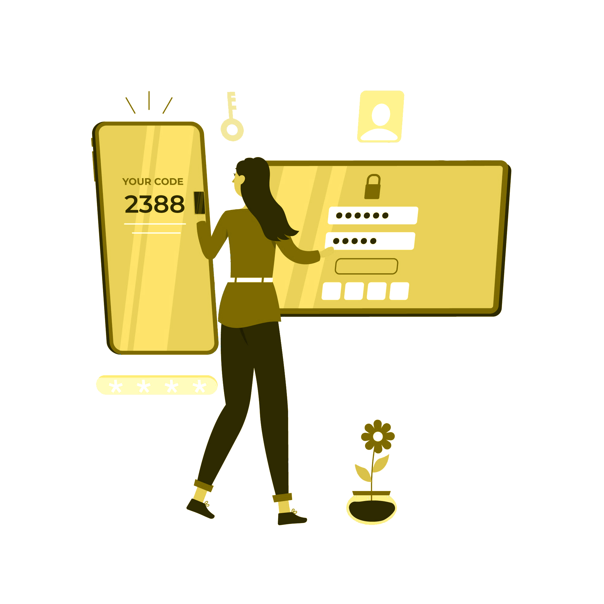

Inleiding

Authenticatie berust op het feit dat alleen de gebruiker een bepaald wachtwoord weet of een eigenschap bezit. Toch is het mogelijk voor een derder partij om dit wachtwoord te kraken door gebruik van een script. Hierbij wordt de input voor het wachtwoord gebombadeerd met alle mogelijke combinaties. Daarom is het belangrijk en vaak verplicht om een wachtwoord te kiezen dat verschillende soorten tekens bevat. Een ingewikkelder wachtwoord kost meer tijd om te kraken, echter worden computers steeds sneller. Er is dus vaak extra beveiliging nodig bij een digitale identificatie.

Identificatie is het proces waarbij de gebruiker een gebruikersnaam, email adress of een ander uniek ID naar de webserver toe stuurt. Het maakt hier nog niet uit of deze gebruiker daadwerkelijk de juiste gegevens invoert, soms kan wel worden gecommuniceerd dat er geen account gekoppeld is aan deze gegevens.

Het lijkt erg logisch om een sterk wachtwoord te gebruiken. Toch kiezen veel internetgebruikers voor een wachtwoord dat makkelijk te onthouden is en vaak wordt hergebruikt op andere sites. Ook al kost het meer moeite, wordt aangeraden om een combinatie van letters en cijfers, hoofdletters en speciale tekens te gebruiken. Daarnaast moet het wachtwoord minstens 10 tekens lang zijn en geen persoonlijke informatie of enkele woorden te gebruiken. Via de website howsecureismypassword.net kun je checken hoe sterk een wachtwoord is.

Naast een veilig wachtwoord is het ook belangrijk dat alleen de gebruiker weet welk email-adress of telefoonnummer gekoppeld is aan een account. Regelmatig worden databases met gebruikersgegevens gecomprimeerd door slechte cybersecurity. Het is belangrijk om zo snel mogelijk een nieuw wachtwoord aan te vragen als deze voorkomt in een dataleak. Op de website haveibeenpwned.com kun je checken of jouw email-adress, telefoonnummer of wachtwoord gelekt is in een databreach.